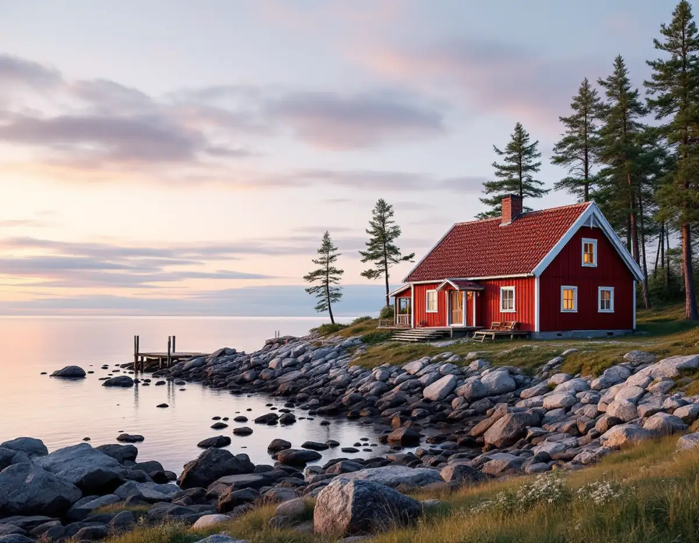
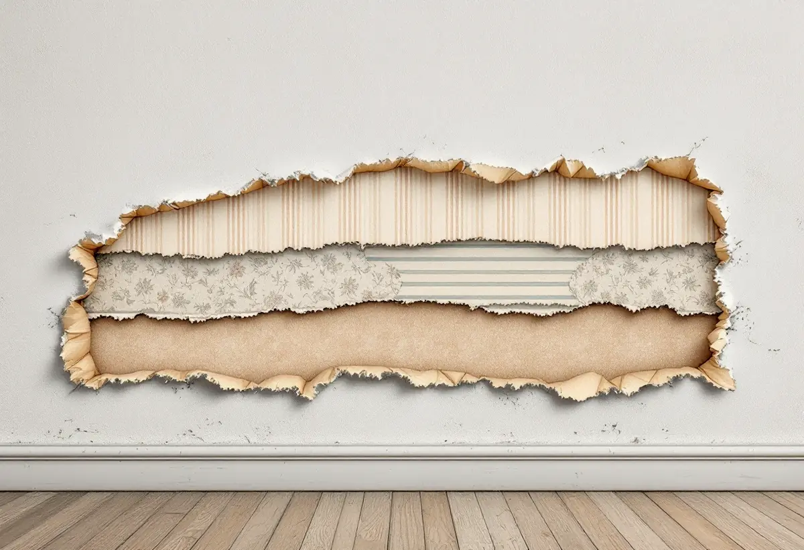
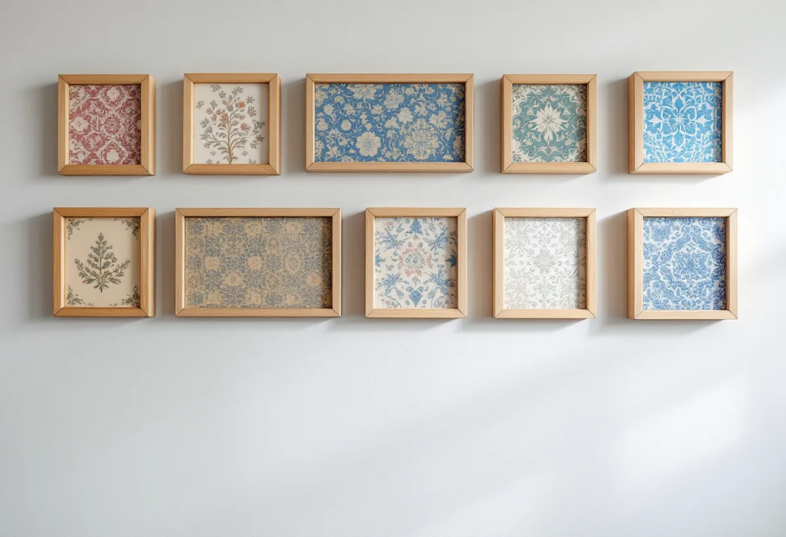

Platsbesök
Vi tittar på lagren och på hur huset värms under vintern.
I skärgårdens gårdar och sommarhus kan det sitta tapetlager från många generationer, och ibland är de det enda som berättar hur rummen en gång såg ut. Geal Entreprenad AB tapetserar i hus på Värmdö och hjälper dig att bestämma vad som ska rivas, sparas eller byggas in.

Värmdö kommuns kulturmiljöprogram, Värmdö – Kulturhistoria i skärgårdsbygd, beskriver kommunens bästa kulturmiljöer, från förhistoriska gravfält och skärgårdsbyar till bruksmiljöer och villasamhällen. Programmet ges nu ut i en tredje upplaga.
Ett exempel på hur mycket en interiör kan bära är Beatelund. Programmet berättar att gårdens målade tapeter från 1730-talet såldes på auktion 1917 men köptes tillbaka av ägaren Sten Westerberg på 1930-talet, då gården restaurerades. Få hus har sådana tapeter, men principen gäller även ett enklare torp: lagren på väggen är en del av husets historia.

Svenska Byggnadsvårdsföreningen beskriver tapetlagren som en form av kulturlager som kan berätta om husets historia. I ett hus med intressanta kulturhistoriska värden kan många tycka att det är ett ansvar att ta hand om lagren för kommande generationer.
Bygger man in lagren bakom nya skivor kan de i sämsta fall glömmas bort helt och i bästa fall återupptäckas längre fram. Under tiden bidrar de lite till husets isolering. Det är ett val, inte ett fel, och vi tar det tillsammans med dig innan arbetet börjar. Ofta landar det i en blandning: lagren sparas i ett rum och tas ner i ett annat.
Ett vanligt sätt att ta vara på vackra tapeter är enligt föreningen att skära ut ett fält, lösa upp lagren och rama in dem i kronologisk ordning. Lagren löses med blött tidningspapper runt fältet och en plastpåse runt paketet i ett dygn. Var försiktig, eftersom limfärg är vattenlöslig.
Man kan också samla proverna i en tapetpärm eller lägga några hela våder av tapetpaketet på vinden. Hela våder får med sig bårder, hela mönster och andra spår som kan intressera den som forskar om huset i framtiden.
Lite buckliga tapeter kan vara en del av husets karaktär. Föreningen förklarar att det ofta beror på att spännpappen innerst mot väggen har töjts av åratal med växlande fukt och rörelser i huset. Tekniskt är det normalt inget problem, men det kan bli en estetisk fråga.
Väljer du att ta bort allt och börja om finns två vägar enligt föreningen: ny spännpapp eller att limma upp tapeterna. Spännpapp döljer grövre underlag och ger ett skarvlöst underlag utan spackling. Är lerkliningen i gott skick kan den förlimmas, eller så klistras makulaturpapp upp innan papperstapeten sätts.
Används huset bara delar av året är det viktigt att veta. Byggnadsvårdsföreningen avråder från att kallställa ett hus med moderna, täta tapeter eftersom det kan leda till mögel i väggen. En liten grundvärme året om hjälper materialen att hålla sig torra.
Står huset kallt på vintern väljer vi därför papperstapet och undviker täta skikt. Om fasaden och utvändig målning på Värmdö kan du läsa under målare på Värmdö.

Vi tittar på lagren och på hur huset värms under vintern.
Riva, spara prover eller bygga in – vi bestämmer det tillsammans.
Underarbete och tapetsering står för sig per rum.
Papp lagas, ny makulatur sätts upp eller väggen förlimmas.
Papperstapeten sätts upp med mönstret passat.
Vi lämnar restbitar och eventuella sparade prover.
Skatteverket räknar tapetsering inomhus som rotarbete, både i permanentbostaden och i ett fritidshus som du äger och själv använder.
Avdraget är högst 30 procent av arbetskostnaden, högst 50 000 kronor per person och år och högst 75 000 kronor tillsammans med rutavdrag. Tapet, klister och resor ger inget avdrag. Geal drar av beloppet direkt på fakturan.
Hur många lager som ska ner, om prover ska sparas och vilket underlag väggarna behöver. En överblick finns under målare. Efter ett gratis platsbesök får du ett skriftligt kostnadsförslag.
Fasad, fönster och invändig målning.
Målare i Stockholm →Takbyte, takbesiktning och plåtarbeten.
Takläggare på Värmdö →Skärgård, vind och fritidshus.
Takrenovering på Värmdö →Fritidsområden, kulturmiljö och avlopp.
Attefallshus på Värmdö →Brunnsvatten, salt och eget avlopp.
Badrumsrenovering på Värmdö →Byggrätt, PFO-områden och strandskydd.
Byggföretag på Värmdö →Röd panel, vita snickerier och båthus i skärgårdsbyarna.
Fasadmålning på Värmdö →Sommarvillor, skyddade hus och helårsboende.
Fasadrenovering på Värmdö →Gustavsbergs bevarandevärda fönster.
Fönsterbyte på Värmdö →Glasverandor och äldre fönster.
Fönsterrenovering på Värmdö →Fritidshus som blir permanentbostäder.
Golvläggare på Värmdö →Gamla brädgolv och skonsam slipning.
Golvslipning på Värmdö →Fritidshus, eget avlopp och Gustavsberg.
Köksrenovering på Värmdö →Plåttak och beslag på Värmdö.
Plåtslagare på Värmdö →Fritidshus som blir helårshus.
Snickare på Värmdö →Anmälan, kulturmiljö och tak i skärgårdsbyarna.
Takbyte på Värmdö →Skärgårdshus, fritidshus och bruksmiljö på Värmdö.
Målare på Värmdö →Fritidshusplaner och lovfria 30 m².
Tillbyggnad på Värmdö →VVS, varmvattnet och byggreglerna.
Totalrenovering på Värmdö →